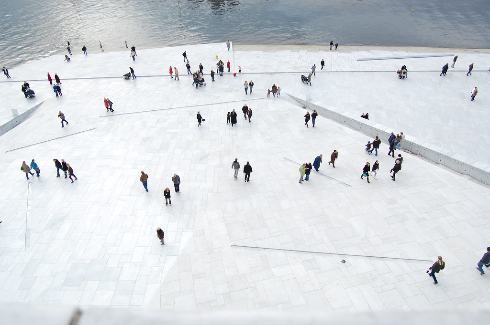

🧭
總覽
先登記 → 用婚假蜜月 → 返台再宴客



| 版本 | 定位 | 分段 |
|---|---|---|
| 推薦 16 天 | 奧斯陸人文 2–3 + Tromsø 極光保底 3–4 + 西 Lofoten 自駕 6,節奏鬆、夜數多、風險分散兩地 | 國際 TPE↔OSL 來回;國內 OSL→TOS→BOO→LKN 進→Lofoten→LKN 出→BOO→OSL |
| 精簡 14 天 | 奧斯陸 2 天、Tromsø 3 晚、Lofoten 5 晚 | 同上;Bodø 過夜 + 奧斯陸回程緩衝夜保留不刪 |
💡 核心邏輯① 兩地極光互為天氣保險:Tromsø 巴士主動追雲「保底看到」、Lofoten 自駕漁村「拍到美照」,9–10 個夜晚分散。② Bodø 過夜防火牆擋 Widerøe 取消。③ 奧斯陸回程緩衝夜,國際線絕不貼 Lofoten 班機。
✈️
機票完整規劃
國際單獨買 · 國內開成一張連程票
(a) 國際 TPE↔OSL 來回經濟艙(含稅,無直飛)
| 排序 | 航空 | 轉機 | 時程 | 來回估價 | 為何選 |
|---|---|---|---|---|---|
| ① 最順 | Finnair | 赫爾辛基 HEL | 約 16.5–18h | 3.1–4.2 萬 | HEL→OSL 僅 1.5h,入北歐最自然 |
| ② 較省 | Qatar / Turkish | DOH / IST | 約 18–21h | 2.8–4 萬(Turkish 常最低) | 評價高/班次多價低 |
| ③ 行李寬 | 長榮 / 中華 | 歐洲點轉 | 約 18–22h | 3.5–4.8 萬 | 中文服務、行李常 2×23kg |
💸 開票策略甜蜜點=出發前 3–5 個月(2026/10 底–12 初);現在就開 Google Flights/Skyscanner 價格追蹤建基準價(合理 3–4.2 萬,≤3.8 萬即出手)。避開 2027/3/28 復活節週。23kg×1 的航空購票時直接加買第 2 件。
(b) 挪威國內接駁鏈(Bodø 為樞紐,3 月無直飛 Lofoten)
| 段 | 航空 | 時間 | 單程估價 |
|---|---|---|---|
| OSL→TOS | SAS / Norwegian | 約 2h | 1,900–4,500 |
| TOS→BOO | Widerøe / SAS | 約 1h | 2,000–4,500 |
| Bodø 過夜防火牆 | — | — | 擋 Widerøe 取消連鎖 |
| BOO→LKN | Widerøe(獨家) | 約 30 分 | 3,500–7,500(瓶頸,愈早訂愈好) |
| 回程 LKN→BOO→OSL | Widerøe+SAS | 約 4–5h | 6,000–12,000 |
📌 關鍵結論國際長途票單獨買;挪威國內全鏈在 SAS/Widerøe 開成一張連程票(行李直掛+轉機保護)。Widerøe BOO↔LKN 買 Smart 以上(含 23kg 託運)。轉機 Bodø 同票留 1.5–2h、分開訂留 3h+。國內兩人合計約 5–6 萬 NTD。
📅
全程逐日(16 天,每天附 A/B/C)
14 天版:刪 D3、D6,Lofoten 6→5 晚
 🏛 奧斯陸(D1–D3)
🏛 奧斯陸(D1–D3)D13/6 五 · TPE→OSL✈ 國際線
桃園出發經 HEL/DOH/IST 轉機,傍晚抵 OSL,入住市區早睡調時差(不安排行程)。
D23/7 六 · 奧斯陸市中心
A 文藝控:MUNCH 孟克《吶喊》→ 歌劇院屋頂踏雪 → Aker Brygge 晚餐
B 經典(最適雪天全室內):國家博物館 → 市政廳諾貝爾壁畫 → Aker Brygge
C 美食悠閒:Mathallen 市集(週一休)→ Akerselva 河 → MUNCH 或國家博
D33/8 日 · 奧斯陸半島/雪景14 天版刪
A 海洋探險(雪 OK):Bygdøy → Fram 極地船 + Kon-Tiki 博物館
B 雪中雕塑+滑雪:維格蘭雕塑公園 → Holmenkollen 跳台+滑雪博物館
C 雪天室內:維格蘭博物館 → 諾貝爾和平中心 → Mathallen
🌌 Tromsø 追極光(D4–D6)D43/9 一 · OSL→Tromsø✈ 國內線🌌 第一晚極光
飛 OSL→TOS(約 2h)入住。傍晚破冰:A 過大橋看北極大教堂 / B Polaria 極地館 / C 室內雙館。
第一晚極光(保底先做掉):A 大巴團(約 3,600–3,900,最保底)/ B 小巴團(≤15 人含熱餐,約 4,965–6,300,蜜月推薦)
D53/10 二 · Tromsø 日間🌌 第二晚
A 哈士奇雪橇(self-drive,最熱門)約 3,600 NTD 起
B 馴鹿雪橇+薩米文化(最慢步調人文)約 6,000–6,735 NTD
C Sommarøy 半島攝影一日(冬季結冰跟團勿自駕)
D63/11 三 · Tromsø 主項二🌌 第三晚14 天版刪
A Fjellheisen 纜車登 Storsteinen(⚠️確認 2027 復工;關閉時走山腰/對岸拍教堂)
B Mack 啤酒廠+Ølhallen 老酒館(室內暖)
C 第二個雪橇 / Camp Tamok 冰穹
🛟 Bodø 過夜防火牆(D7)
D73/12 四 · Tromsø→Bodø✈ 國內線
午後飛 TOS→BOO(約 1h),Bodø 過一晚(去程天候防火牆,擋 Widerøe 取消);可選 Saltstraumen 大漩渦。
 🎣 西 Lofoten 自駕住漁村(D8–D12)
🎣 西 Lofoten 自駕住漁村(D8–D12)D83/13 五 · Bodø→LKN 取車✈ Widerøe🌌 夜
早班 BOO→LKN(約 30 分),LKN 機場取 4WD 含釘胎。前段在 Henningsvær/Leknes 過渡,沿途 Nusfjord、Skagsanden 名灘。
D93/14 六 · 東段過渡日🌌 夜
慢遊 Henningsvær 漁村、Nusfjord、Ramberg/Skagsanden 海灘攝影。
D103/15 日 · 搬進核心區「只搬一次家」🌌 夜
行李丟 Reine/Hamnøy/Sakrisøy 連住 3 晚。住小屋首推 Eliassen Rorbuer(Hamnøy 紅屋)或 Sakrisøy Rorbuer(黃屋)面海房。今日 Hamnøy 橋、Sakrisøy、Reine。
D113/16 一 · Å 公路盡頭 + 交通船🌌 夜
A 開到 Å(公路最末端)漁村博物館、海岸
B Reinefjorden 交通船純搭船賞峽灣(不走 Bunes 雪坡;3 月須前一天電話 +47 994 91 805、週六停)
D123/17 二 · 機動/補拍日🌌 夜
彈性放射狀 day trip,補拍漁村構圖。Lofoten 6 晚的關鍵 ── 只要 1–2 個晴夜就能拍到夢幻照。
🛬 返程(D13–D16)
D133/18 三 · Lofoten→OSL 緩衝夜✈ Widerøe+SAS
回 LKN 還車,Widerøe→BOO 轉 SAS/Norwegian→OSL(約 4–5h),回奧斯陸過一晚(吸收 Widerøe 延誤;旅遊險須含延誤/取消/額外住宿)。
D143/19 四 · 奧斯陸收尾彈性日
A 補看前段沒去的收費館 · B 峽灣冬季渡輪跳島(天好) · C Aker Brygge+歌劇院屋頂+Mathallen 採買伴手禮
D15–163/20–21 · OSL→TPE✈ 國際線
OSL 出發經轉機點飛返,隔日抵達桃園,行程圓滿。
❄ ❄ ❄
🛏
每晚住宿選擇(中低價但品質好)
每個基地 3+ 方案 · Airbnb 公寓/小屋為主 + 可靠訂房替代
⚠ 訂房誠實提醒價格為 3 月每晚雙人行情區間(台幣),非即時報價。Airbnb 2027/3 即時房源與價格現在無法鎖定,連結多為搜尋頁/同型範例,臨訂前再確認房況與清潔費。旅館/rorbu 先用 Booking/官方鎖「可免費取消」保底;Tromsø 與 Lofoten 面海房最搶手,要最早訂。優先「有廚房」房型自炊省餐費。
🏛 基地一｜奧斯陸(D1–D3、D13–D14)
| 方案 | 區域 | 每晚雙人 TWD | 廚房 | 連結 |
|---|---|---|---|---|
| Citybox Oslo 平價設計旅館 ⭐ | Sentrum 距 Oslo S 250m | 2,550–3,720 | 無 | 官網 |
| Smarthotel Oslo 平價旅館 | Sentrum | 2,250–3,410 | 無 | Booking |
| Anker Apartment 公寓式 | Grünerløkka(樓下超市) | 2,400–3,880 | 有 | Booking |
| Airbnb 整套 studio/公寓 | Grünerløkka/Sentrum | 2,850–4,650 | 有 | Airbnb |
| Scandic Vulkan 四星含早餐(升級) | Vulkan/Mathallen | 2,550–4,340 | 無 | 官網 |
中低價首選:Citybox / Smarthotel / Anker Apartment(D1–3、D13–14 靠 Oslo S;中段可換 Grünerløkka 自炊)。
🌌 基地二｜Tromsø(D4–D6)· 極光旺季務必早訂
| 方案 | 區域 | 每晚雙人 TWD | 廚房 | 連結 |
|---|---|---|---|---|
| Smarthotel Tromsø 平價 ⭐ | Sentrum 距主街 200m | 3,300–5,900 | 公共 | 官網 |
| Enter Tromsø 公寓式 | 中心南側步行 5 分 | 3,900–6,800 | 完整 | 官網 |
| TotalApartments Storgata 整套公寓 | Sentrum 核心 | 4,500–7,400 | 完整+洗衣 | Booking |
| Airbnb 整套公寓 | Sentrum/Vervet | 4,200–8,700 | 多完整 | Airbnb |
| Clarion Collection With 含三餐(升級) | Sentrum 近碼頭 | 5,700–8,700 | 無 | Booking |
中低價首選:Smarthotel / Enter Tromsø / TotalApartments。升級:Clarion With(房價含晚餐,出極光團前先吃)。
🛟 基地三｜Bodø(D7,過夜防火牆)
| 方案 | 區域 | 每晚雙人 TWD | 廚房 | 連結 |
|---|---|---|---|---|
| Smarthotel Bodø 24h 自助 ⭐趕早機 | 緊鄰火車站 | 2,300–3,100 | 無 | 官網 |
| Thon Hotel Nordlys 含早餐(評分最高) | 碼頭旁 | 3,400–4,300 | 無 | Booking |
| Scandic Bodø 連鎖含早餐 | 市中心 | 2,800–4,000 | 無 | Booking |
| 整套公寓 Airbnb(自炊) | 市中心 | 2,800–4,600 | 完整 | Airbnb |
機場離市中心僅 2km,住市中心=近機場。首選:Smarthotel(最省、趕早機)/ Thon Nordlys(評分最高)。避雷:Zefyr(醫院旅館)。
🎣 基地四｜Lofoten 過渡 Svolvær/Henningsvær/Leknes(D8–D9)
| 方案 | 村鎮 | 每晚雙人 TWD | 面海/廚房 | 連結 |
|---|---|---|---|---|
| Fast/Nordis Hotel 自助平價 ⭐最省 | Svolvær 近港 | 2,290–3,200 | 一般無 | Booking |
| Marina Hotel Lofoten 公寓式 | Svolvær 市中心 | 3,355–4,575 | kitchenette | Booking |
| Scandic Leknes 含早餐 | Leknes 中心 | 2,745–3,965 | 無 | 官網 |
| Lofoten Suiteapartments 海景公寓(升級) | Svolvær 海濱 | 3,965–5,185 | 面海/全套 | Booking |
| Henningsvær Rorbuer 海上紅屋(升級) | Henningsvær | 4,270–5,795 | 海景/kitchenette | 官網 |
2 晚都住 Svolvær 最省事(超市最齊);想要漁村氛圍可 1 晚換 Henningsvær(先在 Svolvær 補貨)。
🛖 基地五｜Lofoten 核心 Reine/Hamnøy/Sakrisøy(D10–D12 連住 3 晚)
| 方案 | 村落 | 每晚雙人 TWD | 面海/廚房 | 連結 |
|---|---|---|---|---|
| Eliassen Rorbuer 經典紅屋 ⭐最平價 | Hamnøy | 2,370–3,720 | 多面海/kitchenette | 官網 |
| Tind seaside cabins 海邊小屋 | Tind | 4,200–5,500 | 海景/全配廚房 | Booking |
| Sakrisøy Rorbuer 黃屋(無海景房) | Sakrisøy | 3,900–5,500 | 全有廚房+划艇 | 官網 |
| Lofoten B&B Reine 平價民宿含早餐 | Reine 村內 | 3,000–5,500 | 部分附廚房 | Booking |
| Reine 核心面海公寓 Airbnb(升級) | Reine | 4,800–8,700 | 面海/完整廚房 | Airbnb |
中低價首選:Eliassen / Tind cabins / Sakrisøy 無海景 / Lofoten B&B。升級:Sakrisøy 面海黃屋 / Reine 核心面海 Airbnb / Å Rorbuer。餐廳冬季常關,務必選有廚房自炊。
📋 每晚 → 基地 → 建議方案 對照表
| 晚 | 基地 | 中低價首選 | 想升級 |
|---|---|---|---|
| D1 | 奧斯陸 Sentrum | Citybox / Smarthotel | Scandic Vulkan |
| D2 | 奧斯陸(可換 Grünerløkka) | Citybox / Anker Apartment | Airbnb 整套公寓 |
| D3 | 奧斯陸 Grünerløkka | Anker Apartment | Airbnb / Scandic Vulkan |
| D4 | Tromsø Sentrum | Smarthotel / Enter Tromsø | Skaret VANDER / Clarion With |
| D5 | Tromsø Sentrum | Enter Tromsø / TotalApartments | Clarion With(含晚餐) |
| D6 | Tromsø Sentrum/Vervet | TotalApartments | Airbnb 海景 |
| D7 | Bodø 市中心 | Smarthotel / Thon Nordlys | Scandic / 整套公寓 |
| D8 | Svolvær | Fast/Nordis / Marina | Lofoten Suiteapartments |
| D9 | Svolvær(或 Henningsvær) | Marina / Scandic Leknes | Henningsvær Rorbuer / Airbnb |
| D10 | Reine/Hamnøy/Sakrisøy | Eliassen / Sakrisøy 無海景 | Sakrisøy 面海 / Reine Airbnb |
| D11 | Reine/Hamnøy/Sakrisøy | Tind cabins / Sakrisøy 無海景 | Reine 核心面海 Airbnb |
| D12 | Reine/Hamnøy/Sakrisøy | Eliassen / Lofoten B&B | Å Rorbuer / Sakrisøy 面海 |
| D13 | 奧斯陸 Sentrum | Citybox / Saga 私人房 | Scandic Vulkan |
| D14 | 奧斯陸 Sentrum | Citybox / Smarthotel | — |
完整逐家比較與更多選項見 每晚住宿選擇.md。在大鎮(Svolvær/Leknes)一次補齊多日食材再進偏遠村落。
❄ ❄ ❄
🗺
Google Maps 導航
點按直接開啟 Google Maps
整段主線 & Lofoten 自駕
奧斯陸
Tromsø
Lofoten 關鍵點
💰
全程總預算(每人,NTD)
| 項目 | 16 天/人 | 14 天/人 | 說明 |
|---|---|---|---|
| 國際機票 TPE↔OSL | 31,000–48,000 | 31,000–48,000 | 避復活節週 |
| 國內機票(全鏈) | 20,000–28,000 | 18,000–25,000 | BOO↔LKN Widerøe 最貴 |
| 住宿(三段合計) | 28,000–48,000 | 23,000–40,000 | 含 Bodø 1+奧斯陸緩衝 1+Lofoten rorbuer 6 |
| 租車(LKN 4WD 釘胎,均分) | 8,000–14,000 | 7,000–12,000 | 2 人均分 |
| 活動團(極光×2–3+雪橇/薩米+門票) | 18,000–30,000 | 16,000–26,000 | Tromsø 極光為主力 |
| 餐食 | 18,000–28,000 | 16,000–24,000 | 北歐物價高 |
| 雜支(交通/伴手/SIM/保險/ETIAS) | 6,000–12,000 | 6,000–11,000 | 旅遊險含延誤/取消 |
| 每人總計 | 約 12.9–20.8 萬 | 約 11.7–18.6 萬 | 雙人 16 天約 26–42 萬 |
🗓
訂票/訂房倒數時間軸
| 時間 | 待辦 |
|---|---|
| 現在 2026/5–6 | ① 與 HR 書面確認婚假(登記日 2/26 或 3/5,8 日+特休+週末湊 14–16 天,出發約 3/6)② TPE↔OSL 開價格追蹤 |
| 2026/6–9 | ③ Lofoten 小屋一開放就訂(Eliassen / Sakrisøy 面海房先賣完) |
| 2026/9–10 | ④ 訂 LKN 4WD 含釘胎租車 ⑤ 訂奧斯陸/Tromsø/Bodø 住宿 |
| 2026/10 底–12 初 | ⑥ 開國際票(出發前 3–5 個月甜蜜點)、選位、加行李 |
| 2026/12–2027/1 | ⑦ 訂挪威國內連程票(SAS/Widerøe 一張,含 BOO↔LKN,Smart 以上)⑧ 訂 Tromsø 極光團+雪橇/薩米 |
| 2027/1–2 | ⑨ 查 Fjellheisen 載客 ⑩ 辦 ETIAS ⑪ 訂奧斯陸門票、決定 Oslo Pass |
| 出發前 1–2 週 | ⑫ 抵 Lofoten 前一天打 +47 994 91 805 訂交通船 ⑬ 確認旅遊險 ⑭ 線上報到、下載 yr.no |
✅
行前最終檢查清單
📄 證件
護照效期 6 個月+ETIAS 已核准機票+選位住宿訂房信LKN 租車單+國際駕照旅遊險(延誤/取消/醫療)HR 婚假核准備份
🧥 冬季裝備
防風防水厚外套保暖中層+發熱衣毛帽手套圍巾防滑雪靴+冰爪相機+腳架備用電池(貼身)頭燈/暖暖包
📱 App / 通訊
yr.no(雲量)極光預報Google Maps 離線Ruter(奧斯陸)各航空 App北歐 eSIM少量 NOK(其餘刷卡)
⚠ 誠實提醒極光不保證(Tromsø 追雲保底、Lofoten 拍美照,別押單晚);賞鯨 3 月過季;維京船博物館 2027/3 關閉;Bodø 過夜 + 奧斯陸緩衝夜不可省;Reinebringen/Kvalvika 雪坡冬季排除、Reinefjorden 純搭船賞景。